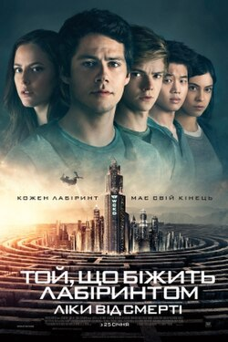
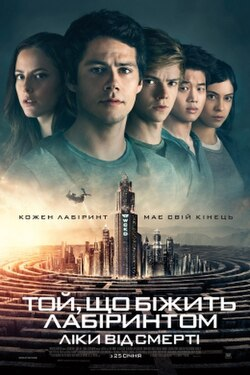

Сотня
Серіал «Сотня» розповідає про підлітків, яких після ядерної катастрофи відправляють з космічної станції на Землю, щоб перевірити, чи можна там жити. Вони стикаються з новими небезпеками і борються за виживання.
Той, що біжить лабіринтом
Фільм про підлітків, які опинилися у величезному лабіринті без пам’яті. Їм доводиться співпрацювати, щоб знайти вихід і зрозуміти, що з ними сталося.
 
